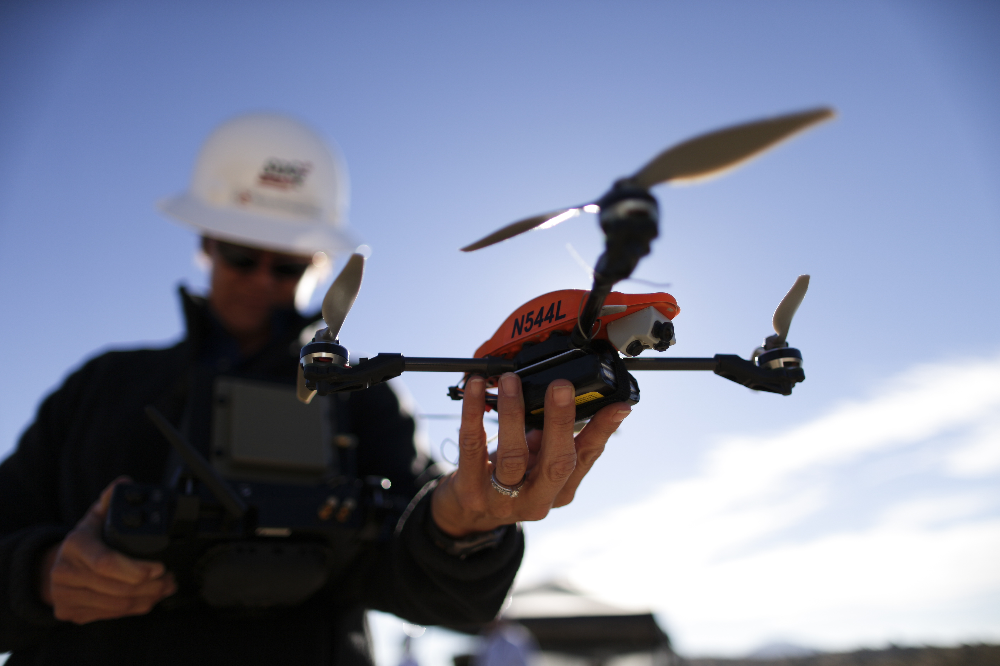
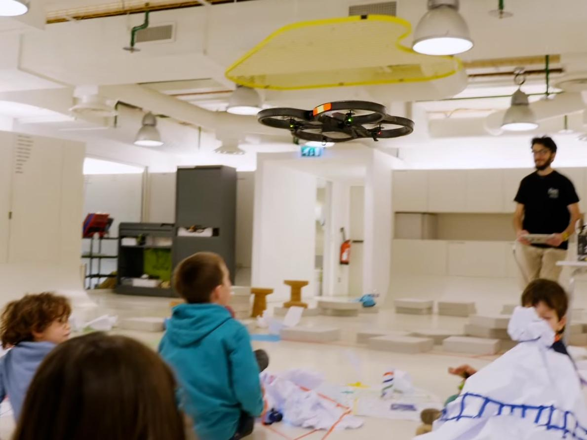
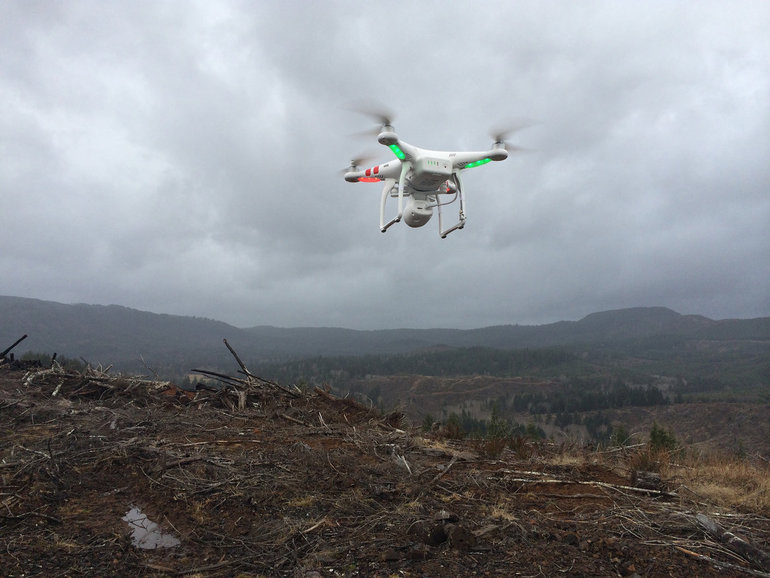
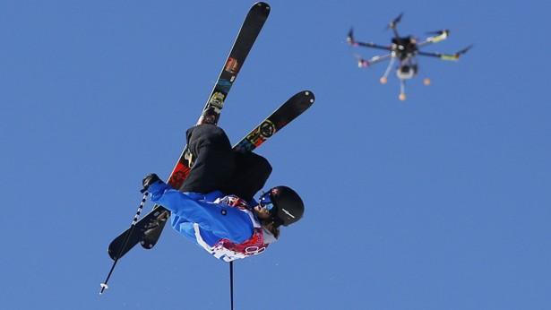

Unmanned Aerial Systems (UAS), more commonly known as “drones”, are expanding in every way. They are now able to do things that would normally be very tedious or even impossible. They are able to go into situations or locations that may not be safe for humans.
 Companies have begun to use them for different purposes. They can be used to obtain photographs and video from different angles. With gimbals and attached cameras they are able to take level shots. This has opened up the drone photography market for everything from wedding photos to corporate advertising. Although the camera is usually associated with photography it can be used for other purposes as well. Airline Companies for example have begun using them to survey the exterior of aircraft for any damage or defects. Energy companies are using them to inspect things like wind turbines, and oversee operations in large facilities such as coal mines. Drones are also being used to deliver mail such as packages from Amazon or even life saving equipment. Drones that bring equipment such as AEDs are being developed to bring equipment to a patient faster than ambulances are able to arrive. They can also be used to bring medicine and other medical devices to remote locations. Drones are also able to map terrain and guide other autonomous vehicles (when outfitted with certain software). Komatsu, the second largest construction company, has funded a project to use drones to map land and then relay that information back to its growing autonomous fleet. The fleet can then perform different operations including grading, excavating, and more.
 Drones can also be used in educational environments. From elementary schools to universities people are using drones to learn and teach in a way never before possible. With a growing demand for programmers schools have begun using drones to teach kids basic commands such as movement. They are also being used in photography classes to teach students how to take aerial shots. In the field of science they are being used to gather data and information for projects. They can be used to survey land for animal and plant species or be used to gather weather data at different altitudes. Drones can also be used to teach students engineering and robotics. Students can either use pre-built drones or design their own to learn the mechanics of flight.
 Drones can also be used in research settings including migrations of animals all the way to 3D-Mapping. With attached cameras drones are able to map landscapes to provide researchers better pictures of areas they are working on. This can help in preventing disasters and protecting wildlife. Researchers are also able to use drones to track migration patterns of animals. They can also track endangered species and protect them from poachers. As well as track those elusive animals that live in remote uninhabitable locations. They are also able to help with meteorology. Drones can be flown into the eye of a hurricane or into large storms to see how they have developed and what the conditions are like within them. NASA has partnered with the National Oceanic and Atmospheric Administration (NOAA) and Northrop Grumman on a $30 million program that uses two Global Hawk drones to improve hurricane forecasts. The drones were designed for high-altitude, long-duration missions, with the ability to stay in the air for approximately 30 hours. Global Hawks can reach altitudes greater than 55,000 feet, which allows them to fly into storms and study hurricane formation, as well as intensity. Drones can also be used to fly over things such as lava flows and volcanoes to gather information that a human wouldn’t be able to.
 Personal drones are remote controlled vehicles typically priced under $1,000 that are small enough to be carried by one person. Personal drones often carry GoPro style cameras. They are commonly used for recreational filming or by hobbyists that want to be able to fly.
Drones can be used for all kinds of uses including commercial, education, and research. The future is limitless. Fly on!
Skydiving, surfing or skiing can now be filmed as if you had your own videographer.